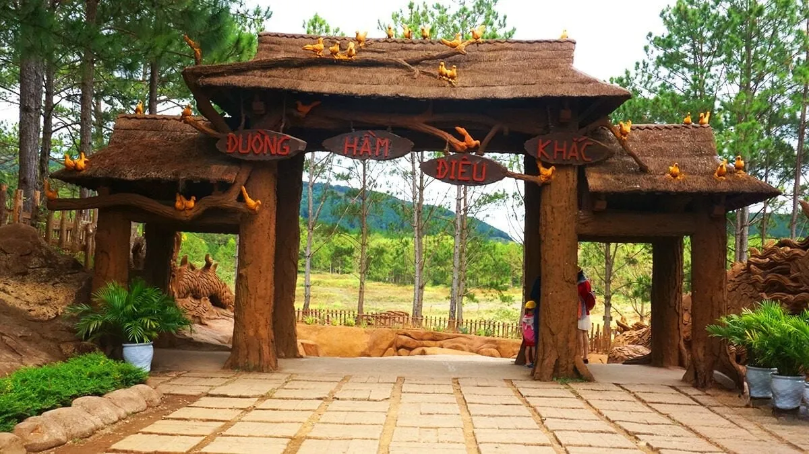
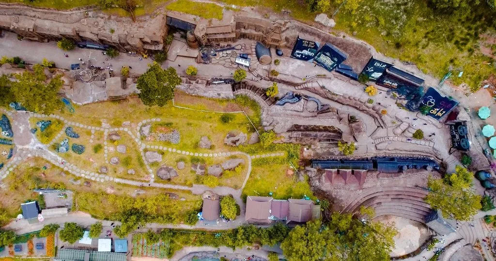
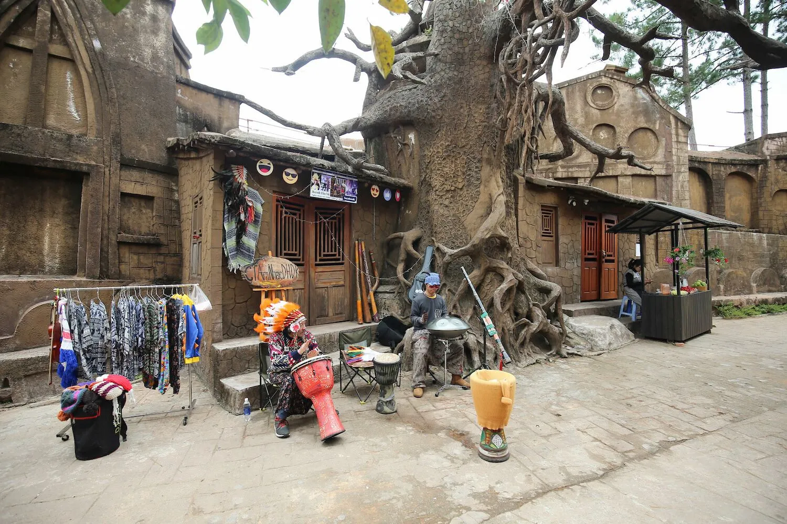
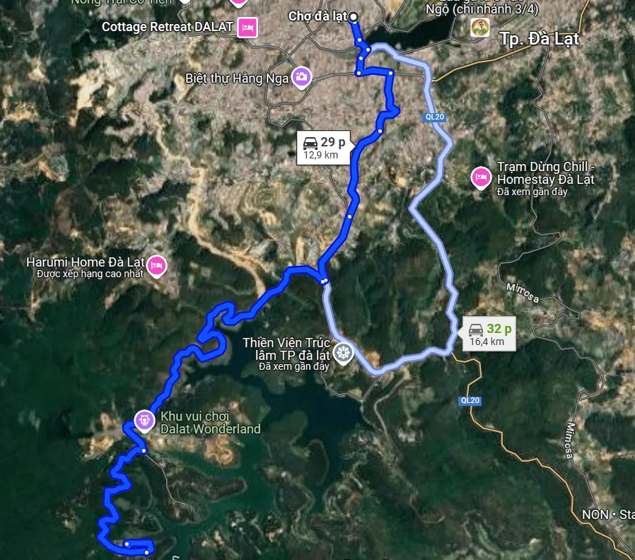

ÄÆ°á»ng Hầm Äiêu Khắc – Tuyệt tác kiến trúc giữa lòng Äà Lạt

Mục lục bà i viết
- 1. Äịa chỉ ÄÆ°á»ng Hầm Äiêu Khắc Äà Lạt ở đâu?
- 2. Quá trình hình thà nh ÄÆ°á»ng Hầm Äiêu Khắc kỳ công
- 3. Thiết kế của ÄÆ°á»ng Hầm Äiêu Khắc Äà Lạt có gì đặc biệt?
- 4. Những ká»· lục ấn tượng mà ÄÆ°á»ng Hầm Äiêu Khắc Äà Lạt đã đạt được
-
5. Trải nghiệm thú vị khi khám phá ÄÆ°á»ng Hầm Äiêu Khắc Äà Lạt
- 5.1. Ngắm nhìn các tác phẩm điêu khắc bằng đất sét đầy sáng tạo
- 5.2. Check-in Hồ Vô Cực – biểu tượng tình yêu giữa thiên nhiên thơ mộng
- 5.3. Hoá thân thà nh ngÆ°á»i đồng bà o – trải nghiệm văn hóa bản địa Ä‘á»™c đáo
- 5.4. Thưởng thức đặc sản Äà Lạt và nghỉ ngÆ¡i thÆ° giãn
- 6. HÆ°á»›ng dẫn Ä‘Æ°á»ng Ä‘i tá»›i ÄÆ°á»ng Hầm Äiêu Khắc
- 7. Gợi ý ẩm thá»±c gần ÄÆ°á»ng Hầm Äiêu Khắc
Sở hữu lối kiến trúc sáng tạo và công phu, ÄÆ°á»ng Hầm Äiêu Khắc được mệnh danh là má»™t trong những công trình Ä‘iêu khắc bằng đất sét ấn tượng nhất tại Việt Nam. Äây không chỉ là địa Ä‘iểm tham quan hút khách mà còn là điểm check-in cá»±c hot ở Äà Lạt mà bạn nhất định không nên bá» lỡ.
Nằm trong danh sách địa Ä‘iểm du lịch Äà Lạt nổi báºt, ÄÆ°á»ng Hầm Äiêu Khắc khiến du khách ngỡ ngà ng vá»›i những công trình tái hiện thà nh phố ngà n hoa theo cách hoà n toà n má»›i – tất cả Ä‘á»u được tạo tác tỉ mỉ từ đất sét. Không gian nÆ¡i đây là “thiên Ä‘Æ°á»ng sống ảo†lý tưởng cho những ai yêu thÃch nghệ thuáºt, Ä‘am mê khám phá và săn ảnh đẹp.
1. Äịa chỉ ÄÆ°á»ng Hầm Äiêu Khắc Äà Lạt ở đâu?

ÄÆ°á»ng Hầm Äiêu Khắc, hay thÆ°á»ng được gá»i thân thuá»™c là đưá»ng hầm đất sét, nằm tại khu du lịch Äà Lạt Star, phÆ°á»ng 4, Äà Lạt – trên cung Ä‘Æ°á»ng dẫn đến hồ Tuyá»n Lâm và Thiá»n Viện Trúc Lâm nổi tiếng.
Với không gian bao quanh là rừng thông xanh mát và cảnh quan núi đồi hùng vĩ, đây là điểm đến lý tưởng cho những chuyến du lịch cuối tuần cùng bạn bè và gia đình.
2. Quá trình hình thà nh ÄÆ°á»ng Hầm Äiêu Khắc kỳ công
ÄÆ°á»ng Hầm Äiêu Khắc ra Ä‘á»i từ ý tưởng Ä‘á»™c đáo của anh Trịnh Bá DÅ©ng và o năm 2010. Dù chỉ bắt đầu vá»›i chiá»u dà i vá»n vẹn 2km, nhÆ°ng đến nay công trình đã tiêu tốn hÆ¡n 200 tá»· đồng đầu tÆ°, trở thà nh biểu tượng của nghệ thuáºt Ä‘iêu khắc đất sét tại Việt Nam.
Äể tạo nên các khối đất sét có Ä‘á»™ bá»n cao giữa khà háºu sÆ°Æ¡ng lạnh Äà Lạt, anh DÅ©ng đã dà nh hÆ¡n 4 năm nghiên cứu để tạo ra công thức đất có khả năng chống mÆ°a nắng, gió sÆ°Æ¡ng – giúp các tác phẩm tồn tại lâu dà i vá»›i thá»i gian.

3. Thiết kế của ÄÆ°á»ng Hầm Äiêu Khắc Äà Lạt có gì đặc biệt?
Hà nh trình sáng tạo nên ÄÆ°á»ng Hầm Äiêu Khắc Äà Lạt không chỉ Ä‘Æ¡n thuần là má»™t công trình nghệ thuáºt, mà còn là câu chuyện kể bằng đất sét đầy cảm hứng vá» lịch sá» và tÆ°Æ¡ng lai của thà nh phố sÆ°Æ¡ng mù. Công trình được chia thà nh hai giai Ä‘oạn thiết kế rõ rệt, má»—i phần Ä‘á»u mang má»™t chủ Ä‘á» riêng biệt nhằm tái hiện vẻ đẹp và quá trình phát triển của Äà Lạt qua từng thá»i kỳ.
3.1. Giai Ä‘oạn 1: Tái hiện lịch sá» hình thà nh Äà Lạt
Phần đầu tiên của Ä‘Æ°á»ng hầm đất sét Äà Lạt Ä‘Æ°a du khách quay vá» thuở sÆ¡ khai, nÆ¡i thiên nhiên hoang dã và núi rừng nguyên sÆ¡ còn ngá»± trị. Từ thá»i Ä‘iểm chÆ°a có dấu chân con ngÆ°á»i đến năm 1893 – cá»™t mốc khi bác sÄ© Yersin đặt chân đến cao nguyên Lâm Viên – má»i chi tiết Ä‘á»u được mô tả sinh Ä‘á»™ng thông qua những bức tượng đất sét. Các loà i thú rừng, rừng ráºm và suối thác Ä‘á»u được tái hiện má»™t cách sống Ä‘á»™ng, khiến du khách nhÆ° lạc bÆ°á»›c và o má»™t bảo tà ng ngoà i trá»i bằng đất sét Ä‘á»™c nhất vô nhị.
Tiếp nối là giai Ä‘oạn khám phá của bác sÄ© Yersin, khi Äà Lạt bắt đầu chuyển mình vá»›i sá»± xuất hiện của các công trình kiến trúc mang Ä‘áºm dấu ấn phÆ°Æ¡ng Tây nhÆ° ga xe lá»a cổ, dinh Bảo Äại, chùa Linh SÆ¡n, hồ Xuân HÆ°Æ¡ng và chợ Äà Lạt. Má»—i tác phẩm Ä‘iêu khắc Ä‘á»u được chăm chút tỉ mỉ, thể hiện sá»± chuyển giao từ thiên nhiên hoang dã sang thà nh phố có quy hoạch rõ rà ng.
3.2. Giai Ä‘oạn 2: Äà Lạt hiện tại và tÆ°Æ¡ng lai
BÆ°á»›c sang phần hai, ÄÆ°á»ng Hầm Äiêu Khắc giá»›i thiệu tá»›i du khách hình ảnh Äà Lạt ngà y nay thông qua các biểu tượng kiến trúc nổi tiếng: trÆ°á»ng Lycée Yersin, Viện Pasteur, nhà thá» Con Gà , khách sạn Palace, hay chợ trung tâm thà nh phố. Từng chi tiết Ä‘á»u được chạm khắc vá»›i Ä‘á»™ chân thá»±c cao, mang lại cảm giác gần gÅ©i và chân thá»±c vá» má»™t Äà Lạt vừa cổ Ä‘iển vừa thanh lịch.

Cuối Ä‘Æ°á»ng hầm là phần tái hiện Äà Lạt trong tÆ°Æ¡ng lai – má»™t thà nh phố hiện đại, năng Ä‘á»™ng vá»›i những công trình má»›i nhÆ° thung lÅ©ng Tình Yêu, hồ Tuyá»n Lâm, sân bay Liên KhÆ°Æ¡ng, và các tuyến Ä‘Æ°á»ng cao tốc. Sá»± kết hợp giữa nét cổ kÃnh và hiện đại tạo nên má»™t tổng thể hà i hòa, giúp du khách cảm nháºn được tầm nhìn phát triển bá»n vững của thà nh phố du lịch nổi tiếng nà y.
4. Những ká»· lục ấn tượng mà ÄÆ°á»ng Hầm Äiêu Khắc Äà Lạt đã đạt được
Không chỉ gây ấn tượng bởi kiến trúc Ä‘á»™c đáo từ đất sét, ÄÆ°á»ng Hầm Äiêu Khắc Äà Lạt còn ghi dấu ấn mạnh mẽ trên bản đồ du lịch Việt Nam vá»›i hà ng loạt ká»· lục đáng tá»± hà o, khẳng định vị thế của má»™t công trình nghệ thuáºt kỳ công và sáng tạo báºc nhất.
4.1. ÄÆ°á»ng hầm đất sét dà i nhất thế giá»›i
Má»™t trong những ká»· lục đáng chú ý nhất chÃnh là việc nÆ¡i đây được công nháºn là công trình Ä‘iêu khắc dÆ°á»›i lòng đất dà i nhất thế giá»›i. Vá»›i chiá»u dà i lên đến hà ng trăm mét, Ä‘Æ°á»ng hầm đất Ä‘á» bazan nà y đã trở thà nh Ä‘iểm nhấn không thể bá» qua trong danh sách các địa Ä‘iểm du lịch Äà Lạt mang tÃnh biểu tượng.

4.2. Ngôi nhà đất sét độc nhất vô nhị tại Việt Nam
Không chỉ có Ä‘Æ°á»ng hầm, khuôn viên nÆ¡i đây còn sở hữu má»™t ngôi nhà là m từ đất Ä‘á» bazan không nung vô cùng đặc biệt – má»™t biểu tượng kiến trúc được đánh giá là độc đáo báºc nhất tại Việt Nam. Ngôi nhà nà y đã vinh dá»± nháºn được hai ká»· lục quốc gia:
- Ngôi nhà đất đỠbazan không nung có phong cách kiến trúc độc đáo nhất Việt Nam
- Ngôi nhà đất đỠbazan đầu tiên có mái đắp nổi bản đồ Việt Nam lớn nhất
5. Trải nghiệm thú vị khi khám phá ÄÆ°á»ng Hầm Äiêu Khắc Äà Lạt
5.1. Ngắm nhìn các tác phẩm điêu khắc bằng đất sét đầy sáng tạo
Ngay khi đặt chân và o không gian nghệ thuáºt đặc biệt nà y, bạn sẽ choáng ngợp bởi hà ng trăm công trình Ä‘iêu khắc đất sét được tái hiện vô cùng sống Ä‘á»™ng. Từ bản nhạc “Ai lên xứ hoa Ä‘Ã o†huyá»n thoại, đến những địa danh nổi tiếng nhÆ° hồ Xuân HÆ°Æ¡ng, ga Äà Lạt, chợ Äà Lạt… tất cả Ä‘á»u được thể hiện tinh tế, chi tiết và có chiá»u sâu nghệ thuáºt.
Má»—i góc nhá» trong khuôn viên Ä‘á»u là má»™t background check-in “xịn sò†cho những ai Ä‘am mê nhiếp ảnh và muốn ghi lại những khung hình mang Ä‘áºm dấu ấn Äà Lạt.
5.2. Check-in Hồ Vô Cực – biểu tượng tình yêu giữa thiên nhiên thơ mộng
Má»™t trong những Ä‘iểm nhấn không thể bá» lỡ tại ÄÆ°á»ng Hầm Äiêu Khắc chÃnh là Hồ Vô Cá»±c – nÆ¡i được mệnh danh là “chốn tiên cảnh†giữa lòng Äà Lạt. Hồ nằm giữa không gian rá»™ng mở vá»›i rừng thông bao quanh và mặt nÆ°á»›c tÄ©nh lặng, tạo nên má»™t khung cảnh nên thÆ¡ khó cưỡng.
Nổi báºt giữa hồ là bức tượng chà ng K’Lang và nà ng H’Biang, tượng trÆ°ng cho câu chuyện tình yêu lãng mạn trên cao nguyên Lang Biang. Äây chÃnh là điểm check-in cá»±c hot được giá»›i trẻ và du khách săn đón má»—i khi đến vá»›i thà nh phố má»™ng mÆ¡.
5.3. Hoá thân thà nh ngÆ°á»i đồng bà o – trải nghiệm văn hóa bản địa Ä‘á»™c đáo
Má»™t hoạt Ä‘á»™ng thú vị tại ÄÆ°á»ng Hầm Äiêu Khắc Äà Lạt mà bạn nên thá» là thuê trang phục truyá»n thống của các dân tá»™c thiểu số nhÆ° Lạch, CÆ¡ Ho, Chil hay Srê. Hoá thân trong bá»™ trang phục sặc sỡ, bạn sẽ không chỉ có được những bức ảnh mang Ä‘áºm phong vị cao nguyên, mà còn có cÆ¡ há»™i tìm hiểu thêm vá» bản sắc văn hoá Ä‘a dạng của các dân tá»™c sinh sống tại Äà Lạt.
Äây là trải nghiệm lý tưởng cho những ai muốn kết hợp du lịch vá»›i khám phá văn hoá địa phÆ°Æ¡ng má»™t cách chân thá»±c.

5.4. Thưởng thức đặc sản Äà Lạt và nghỉ ngÆ¡i thÆ° giãn
Sau khi tham quan và chụp ảnh thá»a thÃch, bạn có thể dừng chân tại khu vá»±c phục vụ ăn uống để thưởng thức các món ăn địa phÆ°Æ¡ng hấp dẫn. Từ những món ăn nhẹ nhÆ° bánh tráng nÆ°á»›ng, sữa Ä‘áºu nà nh nóng hổi, cho đến các loại kem mát lạnh hay nÆ°á»›c ép trái cây tÆ°Æ¡i mát – tất cả Ä‘á»u góp phần là m trá»n vẹn hà nh trình khám phá của bạn.
Äây cÅ©ng là dịp để bạn nạp lại năng lượng, táºn hưởng không khà mát là nh đặc trÆ°ng của Äà Lạt và sẵn sà ng tiếp tục cuá»™c hà nh trình du lịch Äà Lạt đầy cảm hứng.
6. HÆ°á»›ng dẫn Ä‘Æ°á»ng Ä‘i tá»›i ÄÆ°á»ng Hầm Äiêu Khắc
6.1. ÄÆ°á»ng Ä‘i đến ÄÆ°á»ng Hầm Äiêu Khắc:
Việc di chuyển đến khu du lịch ÄÆ°á»ng Hầm Äiêu Khắc Äà Lạt không quá khó khăn. Tùy và o vị trà xuất phát, bạn có thể lá»±a chá»n má»™t trong những lá»™ trình sau:
Từ chợ Äà Lạt
Xuất phát từ khu vá»±c chợ Äà Lạt, bạn Ä‘i theo Ä‘Æ°á»ng Nguyá»…n Văn Cừ, rẽ trái và o Bà Triệu rồi tiếp tục thẳng đến Äà o Duy Từ. Sau đó rẽ phải và o Nguyá»…n Trung Trá»±c và chếch trái để và o Triệu Việt VÆ°Æ¡ng. Tá»›i giao lá»™ vá»›i Ä‘Æ°á»ng Hoa Hồng thì rẽ phải, Ä‘i thêm khoảng 5,4km và rẽ và o con Ä‘Æ°á»ng đèo là sẽ tá»›i nÆ¡i. Quãng Ä‘Æ°á»ng khoảng 12km, mất tầm 30 phút lái xe.
Từ dinh Bảo Äại III
Từ Dinh Bảo Äại III, bạn Ä‘i dá»c theo Triệu Việt VÆ°Æ¡ng và tiếp tục theo Ä‘Æ°á»ng Hoa Hồng. Khi thấy nhà hà ng đất sét, rẽ phải và đi thêm khoảng 2,5km là đến khu du lịch.
Từ đèo Prenn
Nếu Ä‘ang di chuyển từ hÆ°á»›ng đèo Prenn, gần khu vá»±c thác Datanla, bạn sẽ thấy bảng chỉ dẫn và o các khu nghỉ dưỡng. Rẽ và o Ä‘Æ°á»ng nà y, Ä‘i tiếp 1km là đến hồ Tuyá»n Lâm. Tại đây, rẽ phải Ä‘i ven hồ đến ngã ba, sau đó rẽ trái và đi thêm khoảng 400m sẽ thấy bảng hÆ°á»›ng dẫn và o ÄÆ°á»ng Hầm Äiêu Khắc. Tiếp tục Ä‘i theo biển chỉ dẫn khoảng 6km là đến nÆ¡i.
📠Bản đồ chỉ Ä‘Æ°á»ng sẽ giúp bạn dá»… dà ng định vị và lên kế hoạch di chuyển thuáºn tiện hÆ¡n.

6.2. Giá vé tham quan ÄÆ°á»ng Hầm Äiêu Khắc má»›i nhất
Cáºp nháºt giá vé ÄÆ°á»ng Hầm Äiêu Khắc năm 2025 nhÆ° sau:
-
NgÆ°á»i lá»›n: 120.000 VNÄ/ngÆ°á»i
-
Trẻ em dÆ°á»›i 1m3: 50.000 VNÄ/bé
-
Nếu đi theo đoà n đông, bạn có thể liên hệ trực tiếp quầy vé để được hưởng mức giá ưu đãi.
💡 Lưu ý: Vé chỉ bao gồm phà tham quan, không bao gồm chi phà ăn uống hoặc thuê trang phục chụp ảnh tại điểm du lịch.
6.3. Những địa Ä‘iểm gần ÄÆ°á»ng Hầm Äiêu Khắc nên ghé qua
Sau khi khám phá xong là ng đất sét, bạn có thể kết hợp tham quan thêm nhiá»u địa Ä‘iểm nổi báºt gần đó:
Hồ Tuyá»n Lâm
Má»™t trong những hồ nÆ°á»›c đẹp nhất Äà Lạt, Hồ Tuyá»n Lâm mang đến khung cảnh bình yên, xanh mát, lý tưởng để cắm trại, picnic hay Ä‘Æ¡n giản chỉ là ngắm bình minh bên mặt hồ phẳng lặng.
Thiá»n Viện Trúc Lâm
Ngôi chùa lá»›n và trang nghiêm nà y nằm gần hồ Tuyá»n Lâm, được bao quanh bởi rừng thông và có lối kiến trúc à Äông thanh tịnh. Äây là điểm đến lý tưởng để tìm sá»± tÄ©nh tâm và an yên.
Rừng thông Äà Lạt
Không gian rừng thông bạt ngà n, thoáng đãng sẽ là nÆ¡i lý tưởng để bạn thÆ° giãn, Ä‘i dạo và táºn hưởng không khà mát mẻ đặc trÆ°ng của cao nguyên Lâm Viên.
6.4. Má»™t số lÆ°u ý cần nhá»› khi đến ÄÆ°á»ng Hầm Äiêu Khắc
Äể chuyến tham quan thêm trá»n vẹn và an toà n, bạn nên ghi nhá»› những Ä‘iá»u sau:
- Dù Ä‘Æ°á»ng và o đã được trải nhá»±a nhÆ°ng vẫn có nhiá»u khúc cua gắt, bạn cần lái xe cẩn tháºn và quan sát kỹ.
- Nên chá»n già y thể thao hoặc dép bệt để dá»… di chuyển, nhất là khi trá»i mÆ°a Ä‘Æ°á»ng khá trÆ¡n.
- Luôn chú ý đến trẻ nhá», đặc biệt tại các khu vá»±c gần hồ nÆ°á»›c sâu.
- Giữ gìn vệ sinh chung, không xả rác bừa bãi và tránh giẫm lên hoa cá».
- Khu vực Hồ Vô Cực rất đông du khách, khi chụp ảnh nên xếp hà ng và tránh chen lấn.
- Trong khuôn viên có quán ăn và nhà hà ng phục vụ món địa phương, tuy nhiên chi phà không bao gồm trong vé tham quan.
7. Gợi ý ẩm thá»±c gần ÄÆ°á»ng Hầm Äiêu Khắc
Sau hà nh trình tham quan ÄÆ°á»ng Hầm Äiêu Khắc, hãy ghé qua Tiệm NÆ°á»›ng & Chill Xóm Lèo để thưởng thức các món ăn hấp dẫn và nghỉ ngÆ¡i. Quán có không gian ấm cúng, thá»±c Ä‘Æ¡n phong phú và phong cách phục vụ chu đáo, là lá»±a chá»n hoà n hảo để kết thúc má»™t ngà y khám phá.

📌 Äịa chỉ: 113 Huỳnh Tấn Phát, PhÆ°á»ng 11, Äà Lạt, Lâm Äồng 67000
📌 Äặt bà n: Tại Äây
📌 Google Maps: Xem Ä‘Æ°á»ng Ä‘i
📌 Hotline: 076.45.27.336 – 08.99.42.84.34 – 0902.91.22.40
ÄÆ°á»ng hầm đất sét là má»™t Ä‘iểm đến không thể bá» qua khi bạn ghé thăm Äà Lạt. Vá»›i kiến trúc Ä‘á»™c đáo, không gian nghệ thuáºt và phong cảnh thiên nhiên tuyệt đẹp, nÆ¡i đây mang đến cho bạn những trải nghiệm đáng nhá»›. Äừng quên kết hợp chuyến Ä‘i vá»›i việc thưởng thức món ngon tại Tiệm NÆ°á»›ng & Chill Xóm Lèo để là m trá»n vẹn hà nh trình của bạn. Äà Lạt luôn sẵn sà ng chà o đón bạn vá»›i những Ä‘iá»u tuyệt vá»i nhất!